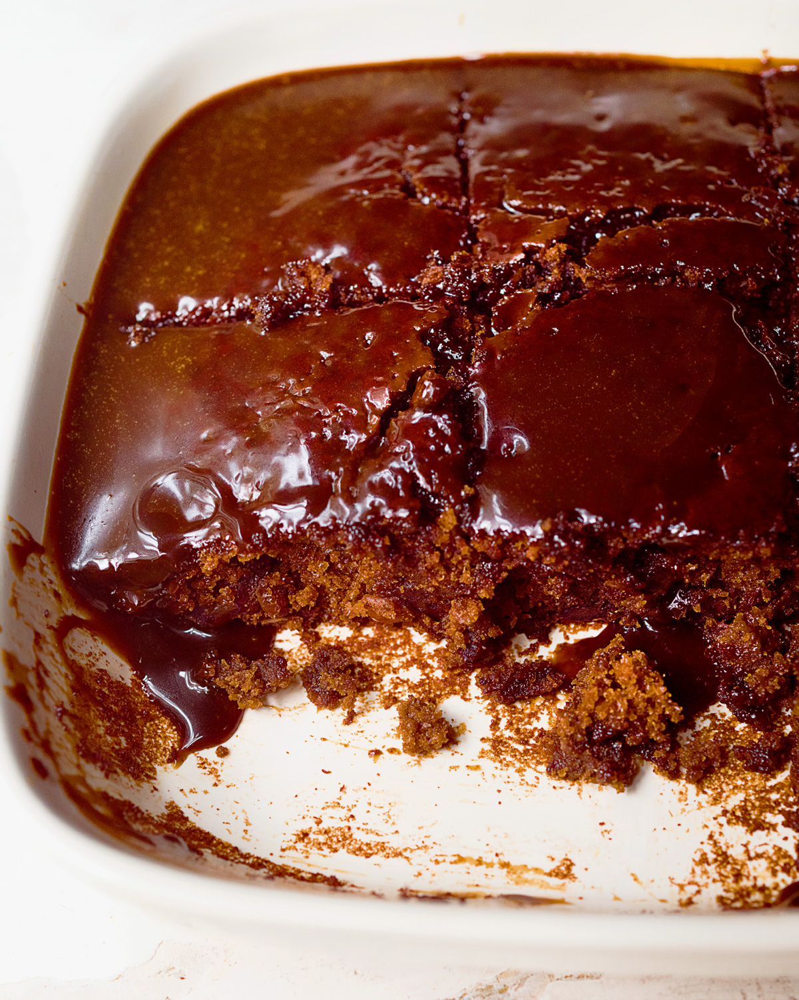

Sticky Toffee Pudding

Description
There is very little that can compare with the glory of a sticky toffee pudding. This one is altogether deeper and darker than the original version: it is still sweet, but the muscovado sugar and black treacle give it an almost savage intensity.
It shouldn’t be eaten piping hot, but warm: once the sponge has been topped with a glaze of the sauce you should leave it for 30 minutes before serving, though you can easily leave it for up to an hour.
Ingredients
For The Sponge
- 200 grams soft dried pitted dates (roughly chopped)
- 1 teaspoon bicarbonate of soda
- 75 grams soft unsalted butter (plus more for greasing)
- 2 x 15ml tablespoons black treacle
- 50 grams dark muscovado sugar
- 2 large eggs (at room temperature)
- 150 grams plain flour
- 2 teaspoons baking powder
For The Sauce
- 150 grams soft unsalted butter
- 300 grams dark muscovado sugar
- 1 x 15ml tablespoon black treacle
- 200 millilitres double cream (plus more to serve)
Steps
- Preheat the oven to 180°C/160°C Fan/350°F and lightly grease your dish. Put the chopped dates, 200ml/¾ cup of boiling water and bicarbonate of soda into a bowl, give a stir and then leave for 10 minutes.
- Cream the butter and black treacle until well mixed, then add the sugar and mix again, beating out any lumps. Beat in an egg and keep beating — scraping down as necessary — until completely incorporated, then do likewise with the other egg. Beating more gently, add the flour and baking powder until you have a smooth, thick batter.
- Using a fork, stir the soaked dates, squishing them a bit, then pour the dates and their liquid into the batter and beat gently to mix in.
- Pour and scrape into your prepared dish or cake tin and bake in the oven for 30-35 minutes, or until a cake tester comes out clean.
- While the pudding's in the oven, you can make the sauce. Melt the butter, muscovado sugar and treacle over a very low heat in a heavy-based saucepan. Once the butter's melted, stir gently until everything else is melted too. Now stir in the cream, then turn up the heat and when it's bubbling and hot, take it off the heat.
- As soon as it's out of the oven, prick the cooked sponge pudding all over with a cocktail stick and pour about a quarter of the warm sauce over, easing it to the edges with a spatula so that the sponge is entirely topped with a thick sticky glaze. Put a lid on the remaining sauce in the pan to keep it warm.
- Leave for 20-30 minutes, or up to an hour is fine, then take to the table, with the rest of the sauce in a jug, and cream to serve.